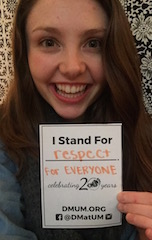
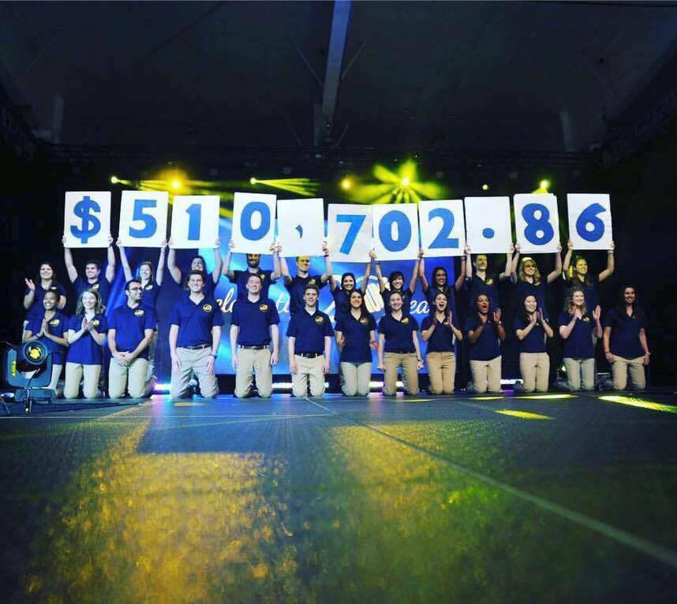
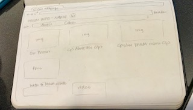
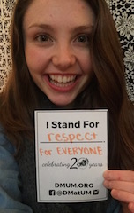
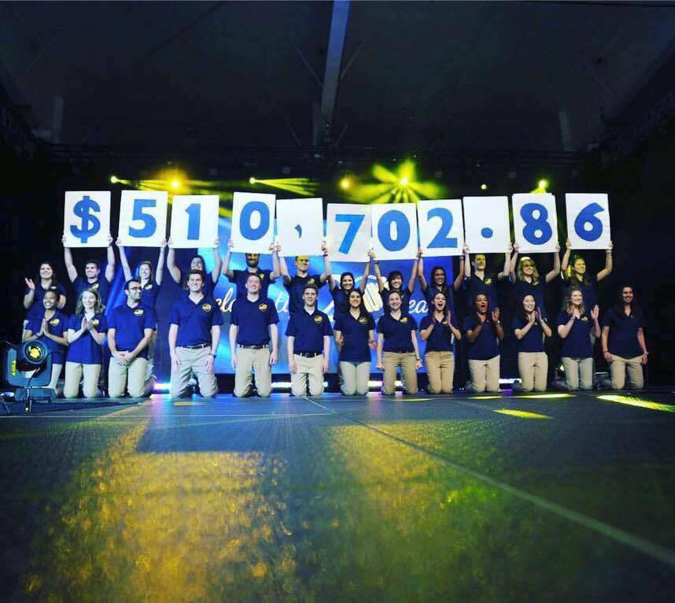
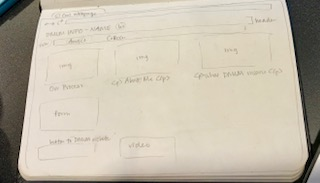

Hi, my name is Colleen! I am currently a senior in the School of Information at the University of Michigan. I am specializing in Information Analysis within the School of Information because I am very interested in big data and analysis. Outside of the classroom I am a part of the lagest student organization, Dance Marathon. I joined Dance Marathon as a freshman because I have a passion for working with kids and advocating for those of all different abilities. The last two years I decided to take on a leadership position on the Information Management team so that I could give back to the organization that has given me so much. Joining this organization has been the most rewarding experience of my college career. I am always inspired by such hardworking, dedicated, and passionate people.
I am one of the Information Management Chairs for Dance Marathon. As Information Management Chair, my primary responsibilities include maintaining and updating the organization's website and database. Myself and my co-chair, Angel, delegate similar tasks to our three team coordinators and oversee that they are completing such tasks properly and efficiently. Our recent projects include revamping the website, reorganizing the database, and developing an informational mobile application that can be used across the entire organization.
Check out our new and improved website to learn more about DMUM!
 




